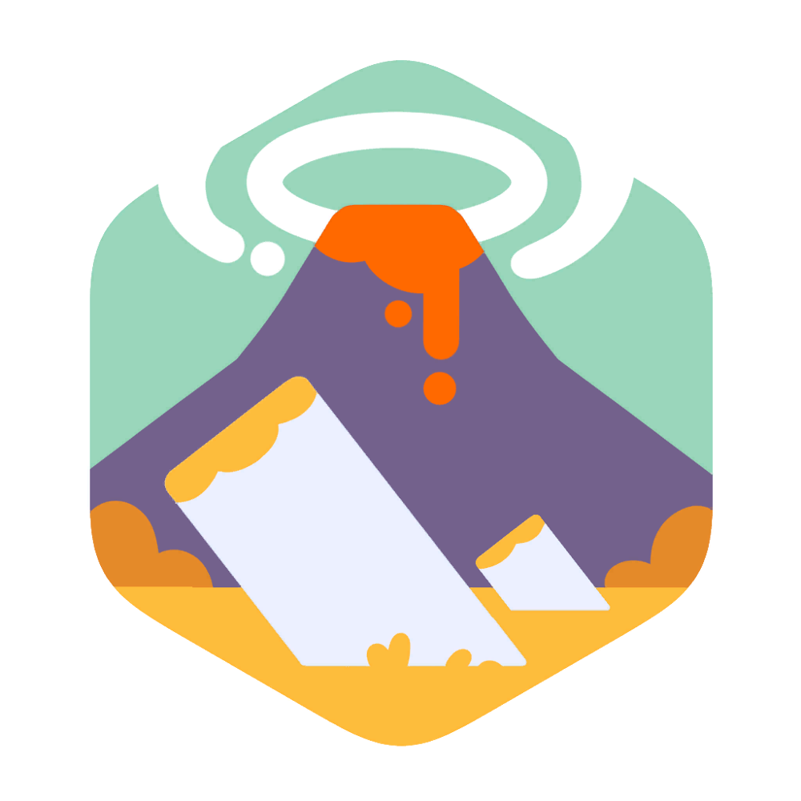
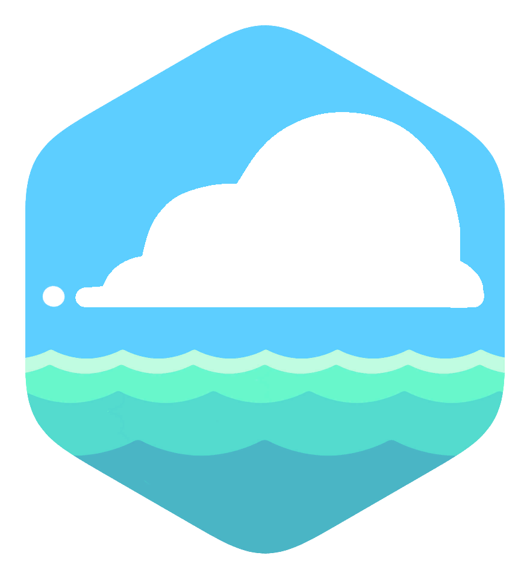

Mapas e Localizações
Visão Geral
Slime Rancher 2 apresenta diversos ambientes na Ilha Arco-Íris. Entender esses mapas e localizações é fundamental para uma coleta de recursos eficiente e para a exploração.
Localizações Principais
🏠 Solário

O seu portal para um paraíso multicolorido. Quando Beatrix chegou à Ilha Arco-Íris, ela descobriu este misterioso solário abandonado e decidiu usá-lo como seu novo lar, uma vez que possui todas as instalações que um rancheiro de slimes experiente precisa para ganhar a vida.
O Solário é a única estrutura na ilha que parece ter sido construída recentemente, contrastando com as antigas ruínas de slime encontradas por toda a Ilha Arco-Íris. Estranhamente, as imperfeições e estruturas desgastadas parecem ser parte do projeto original, como se tivesse sido criado para exposição em um museu.
Slimes encontrados: Rosas, Rochosos, Tigrados
🌈 Campos de Arco-Íris

Muda de cores como um sonho e desvanece tão rápido quanto. Aqui nos Campos de Arco-Íris, cada dia é como uma perfeita e interminável tarde preguiçosa. Do tipo que faz qualquer um querer se estirar na relva multicolorida e passar horas observando as nuvens de marshmallow vagando lentamente pelo céu azul.
Slimes de Algodão alegres e saltitantes saem de suas tocas subterrâneas e pulam pelas clareiras, sempre torcendo para pousar sobre um delicioso pedaço de alface d'água. Exploradores cuidadosos também encontrarão fartas reservas de pedra-gelatina ao longo das colinas e falésias.
Slimes encontrados: Algodão, Rosas, Rochosos, Tigrados, Fosforescentes (à noite)
Recursos: Alface d'Água, Pedra-gelatina, Salmoura Profunda
🌌 Costa Estrelada

A alvorada e o crepúsculo vistos ao mesmo tempo. A Costa Estrelada é um mundo de contradições: um terreno entrecortado de forma irregular pelo Mar de Slime, com escarpas e falésias imponentes elevando-se sobre os densos pântanos ao nível do mar.
O local é misteriosamente dividido em duas partes com paletas de cor opostas em coral e lavanda. A costa é uma fantasia floral, o que a torna um lar ideal para slimes de Mel e Panapanã, que adoram néctar. As copas das árvores estão repletas de colmeias onde mel selvagem e cera zum-zum podem ser coletados.
Slimes encontrados: Mel, Panapanã, Tigrados, Guaxinim
Recursos: Néctar Lunar, Mel Selvagem, Cera Zum-zum

🌋 Vale Escaldante

A cada passo, sentimos um mundo antigo estremecendo sob nossos pés. O Vale Escaldante é sempre barulhento, com grandes gêiseres de água explodindo e lava em erupção por barrancos fumegantes. É um lugar primordial, com desfiladeiros esculpidos por ventos uivantes, deixando à mostra fósseis enormes de criaturas desconhecidas.
A combinação única de forte atividade geotérmica e solo vulcânico cria um terreno abundante em óleo primordial e pó de lava, além de ser o habitat natural de slimes cristalinos, ígneos e cabum.
Slimes encontrados: Cristalino, Ígneo, Cabum, Caçador
Recursos: Óleo Primordial, Pó de Lava, Cinzas

🌊 O Mar de Slime
Um extenso corpo de água composto de slime que não serve para nada. O Mar de Slime que cobre a maior parte da Borda Muito Distante é um mistério. Aparentemente uma mistura de água e slime, parece ser a fonte primordial de onde todos os slimes emergiram.
O líquido que compõe o Mar de Slime não serve para beber, regar plantações ou nadar, uma vez que a maioria das coisas afunda rapidamente. Quando um slime entra no Mar de Slime, desaparece imediatamente, mas pode ser visto reaparecendo logo em seguida em terra.
Atenção: Não entre no Mar de Slime! Você será imediatamente teleportado de volta à costa.
Mapas das Áreas
Conhecer o terreno é metade da batalha. Use estes mapas para planejar suas rotas de exploração.


Dicas para Explorar
- Memorize a localização de recursos chave para otimizar suas rotas de coleta.
- Use teletransportadores e melhorias para viajar rapidamente entre as áreas.
- Prepare-se para slimes mais difíceis e perigosos em zonas avançadas.
- Colete os pontos de mapa para revelar áreas no seu mapa e facilitar a navegação.
- Visite a Costa Estrelada durante o dia e a noite - alguns slimes só aparecem em horários específicos.
- Leve água consigo ao explorar o Vale Escaldante - ela é essencial para acalmar slimes ígneos e derrotar Tarrs.